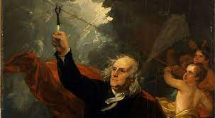

Dorobek Franklina w badaniach nad elektrycznością obejmuje teorię zakładającą elektryzowanie dodatnie i ujemne, co wykazał na przykładzie butelki lejdejskiej. Stwierdził, że ciała naelektryzowane jednakowo odpychają się, zaś naelektryzowane różnoimiennie przyciągają się. Franklin przeprowadził szereg doświadczeń z latawcami, udowadniając, że ładunki elektryczne spływające z chmur burzowych po wilgotnym sznurze mogą naładować butelkę lejdejską. Wymyślił zabezpieczenie przed wyładowaniami elektrycznymi poprzez uziemienie
1. Piorunochron
